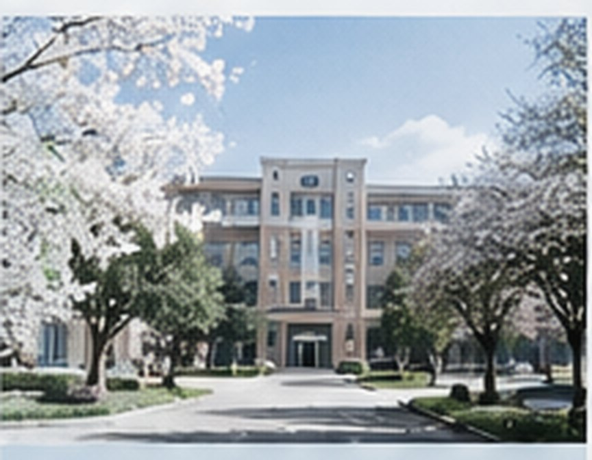

校园新闻

春季志愿服务周活动顺利结束
4 月 10 日至 14 日，校青年志愿者协会在图书馆、二教与东操场周边开展秩序引导和校园清洁活动。受东侧绿地养护围挡影响，原定东操场北侧集合点改至二教南门。
活动负责人表示，本次共回收旧书 327 册，后续将由南门文印店协助制作分类标签。
志愿者还在旧体育馆南侧重新补贴了场地指引。由于东侧绿地临时围挡，摄影社原定的树木取景点取消，改在图书馆前广场完成合影。
- 校运动会报名工作启动04-11
- 学生摄影展在图书馆一层开展04-07
- 毕业照领取窗口安排04-06